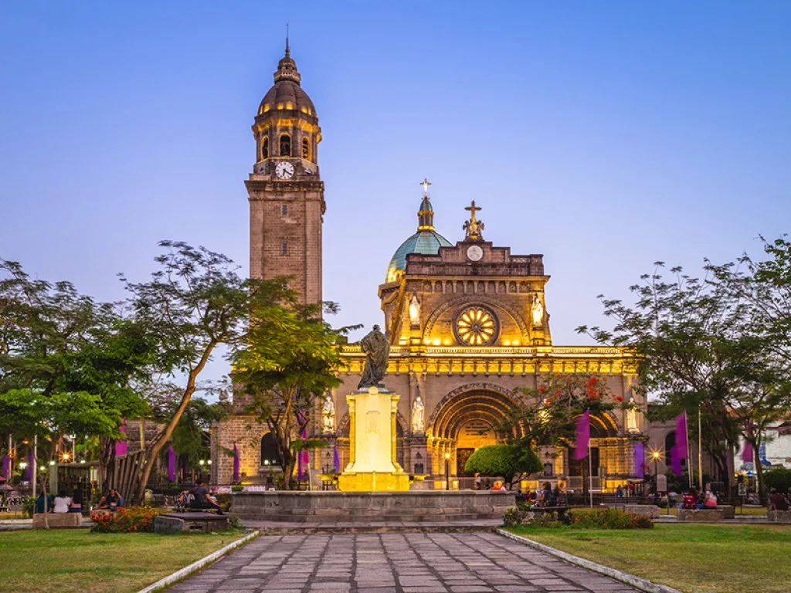
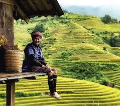
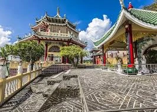
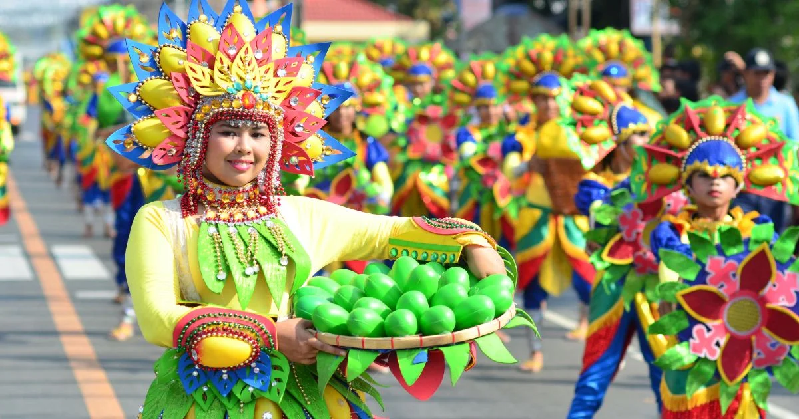
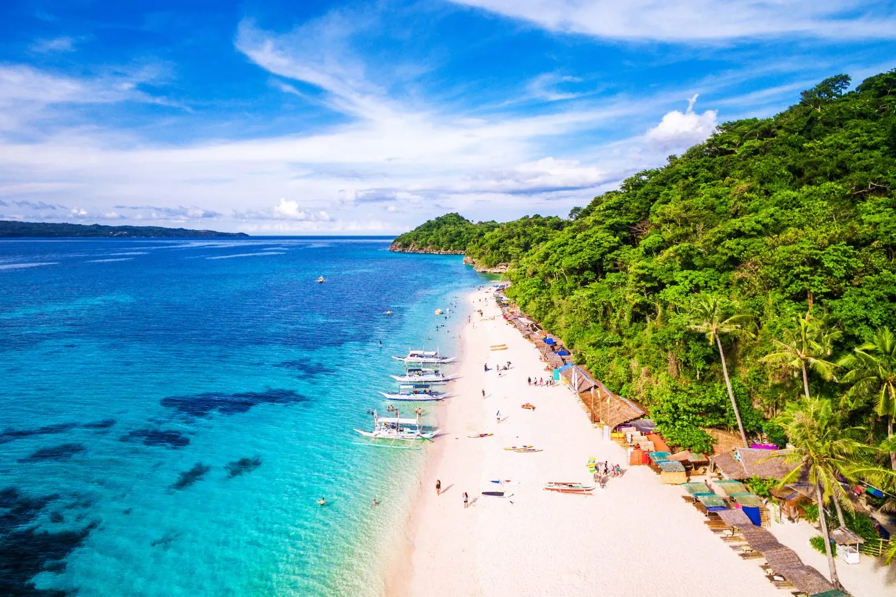

Attractions
The Philippines is a breathtaking archipelago boasting over 7,000 islands, each with its own unique charm. From the turquoise waters and white sandy beaches of Boracay to the emerald rice terraces of Banaue, it offers stunning natural wonders. The bustling streets of Manila and Cebu merge modernity with a rich tapestry of history. Known for its diverse culture, mouth-watering cuisine, and the warmest of welcomes, the Philippines is a gem waiting to be discovered.
Philippines Attractions

Metro Manila

Banaue Rice Terraces

Sinulog Festival

Panagbenga Festival

Boracay
Laguna Falls